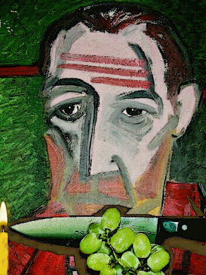

Ritual
by Brent Fisk
You must eat three perfect grapes
with every meal, and there must never
be a pucker near the stem.
For each cheek at bedtime,
three kisses on the exhale,
but only when the eyes are closed.
In the kitchen prepping dinner
you must light the match
with a single strike, then blow it
out. You must wait for the smoke
to curl into nothingness
before you open
the drawer that holds the knives.
When the others sleep you must rise
and check each door and window.
You must see that every flame is burning
pure blue in the stove and heater.
If there is a moon, you won’t sleep at all,
feeling as you do how the deepest shadows
draw a hidden energy
like a cat that steals a breath.
In the morning mirror your confirmation:
dark smudges beneath the eyes,
the pupils bleeding their blackness
into the unkempt corners of your body.

 |